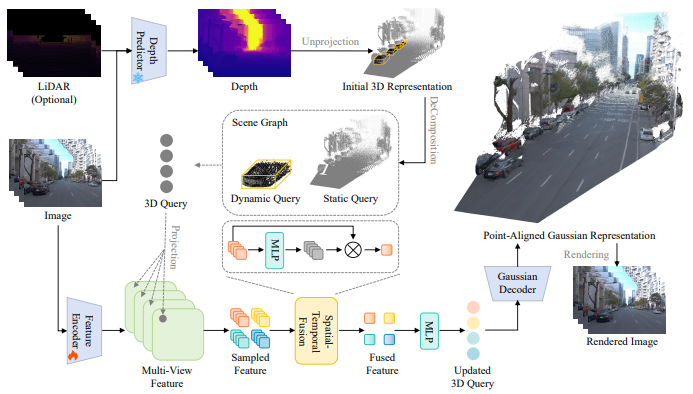
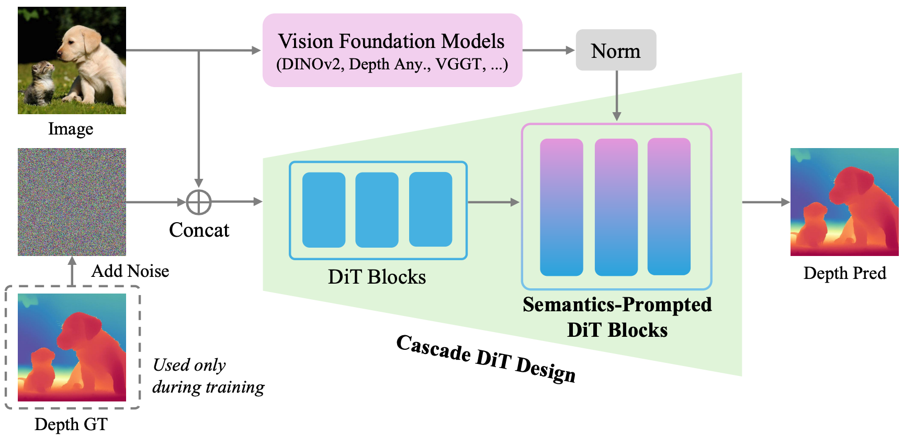
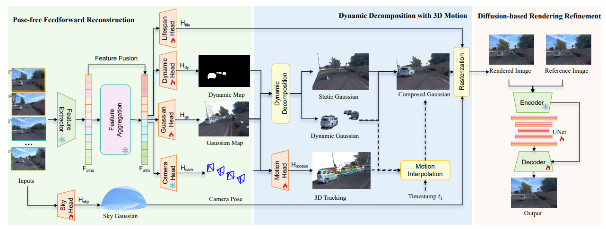
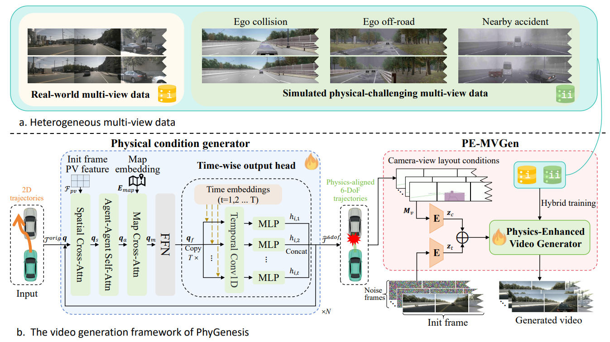
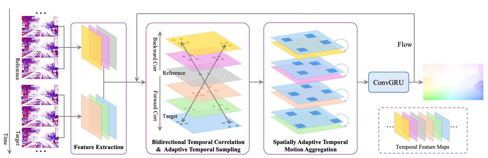
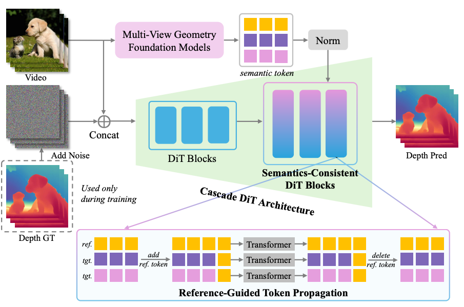
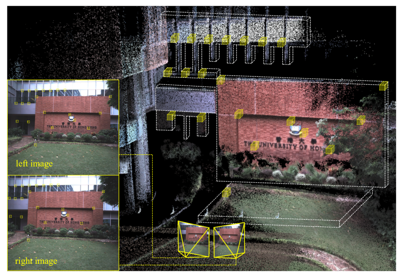
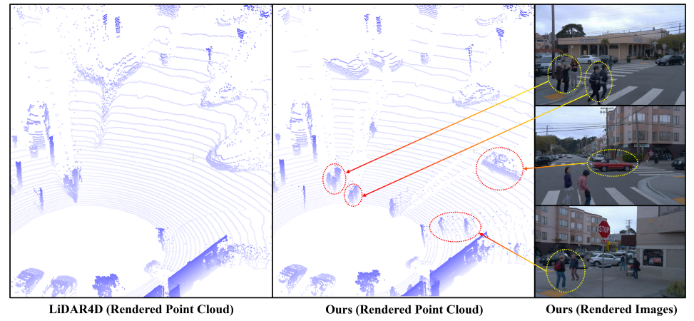
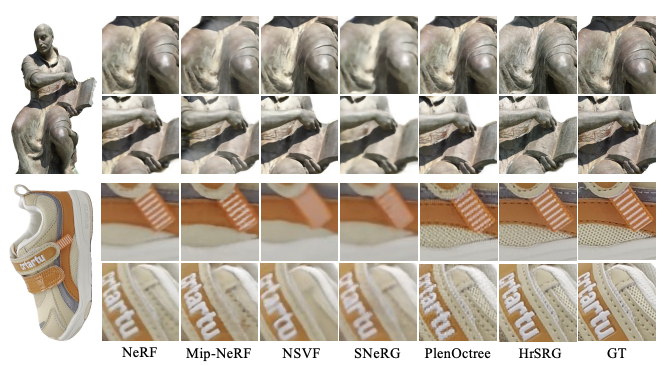

I am a Researcher at Xiaomi Auto, leading the 3D reconstruction and generative world model efforts for Physical AI. I led the development of MiNRE (Mi Neural Rendering Engine), Xiaomi Auto's in-house neural rendering engine for autonomous driving simulation, as well as the Xiaomi Auto World Model. Prior to Xiaomi, I worked at NIO and Alibaba DAMO Academy.
Email: luohongcheng2015@gmail.com

PointForward: Feedforward Driving Reconstruction through Point-Aligned Representations
arXiv preprint arXiv:2605.11594, 2026

Pixel-Perfect Depth with Semantics-Prompted Diffusion Transformers
Advances in Neural Information Processing Systems 38 (NeurIPS), 2026

DGGT: Feedforward 4D Reconstruction of Dynamic Driving Scenes Using Unposed Images
IEEE/CVF Conference on Computer Vision and Pattern Recognition (CVPR), 2026

Toward Physically Consistent Driving Video World Models under Challenging Trajectories
arXiv preprint arXiv:2603.24506, 2026

BAT: Learning Event-based Optical Flow with Bidirectional Adaptive Temporal Correlation
Proceedings of the AAAI Conference on Artificial Intelligence 40 (13), 2026

Pixel-Perfect Visual Geometry Estimation
arXiv preprint arXiv:2601.05246, 2026

Voxel-SVIO: Stereo Visual-Inertial Odometry Based on Voxel Map
IEEE Robotics and Automation Letters (RA-L), 2025

Uni-Gaussians: Unifying Camera and LiDAR Simulation with Gaussians for Dynamic Driving Scenarios
arXiv preprint arXiv:2503.08317, 2025

Digging into Radiance Grid for Real-Time View Synthesis with Detail Preservation
European Conference on Computer Vision (ECCV), 2022